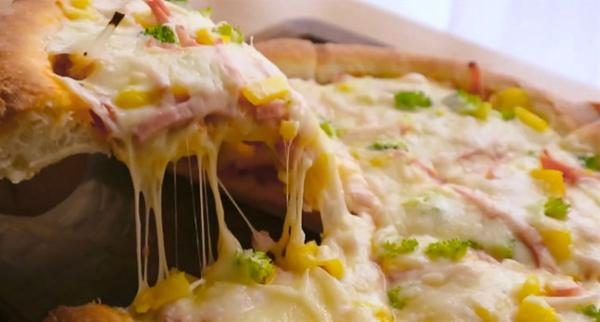
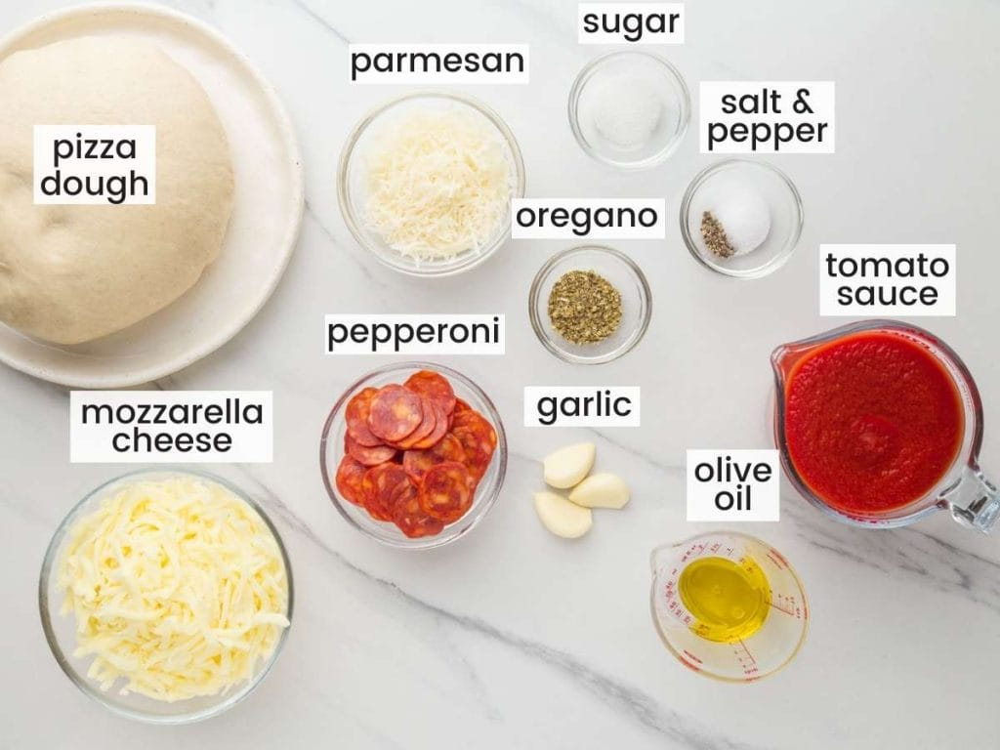
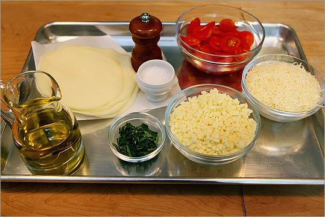
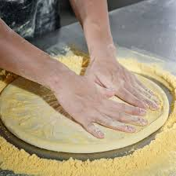
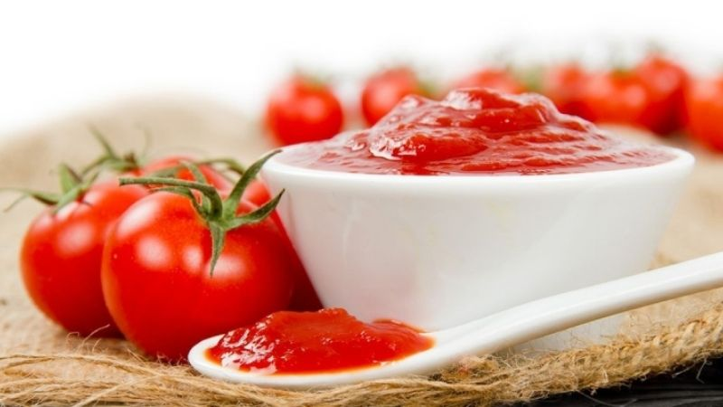
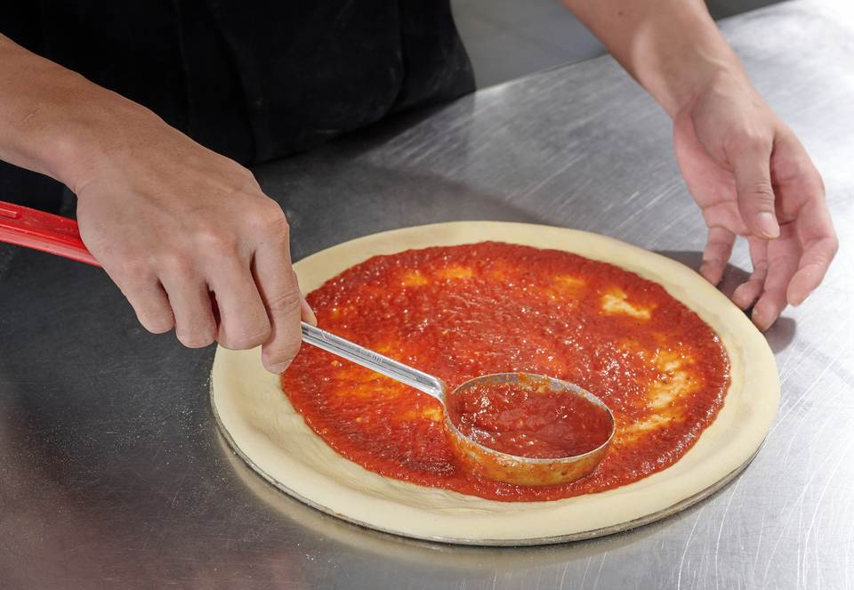
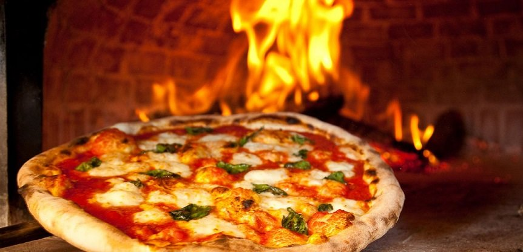
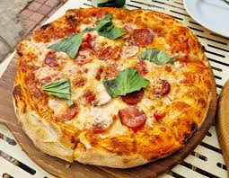
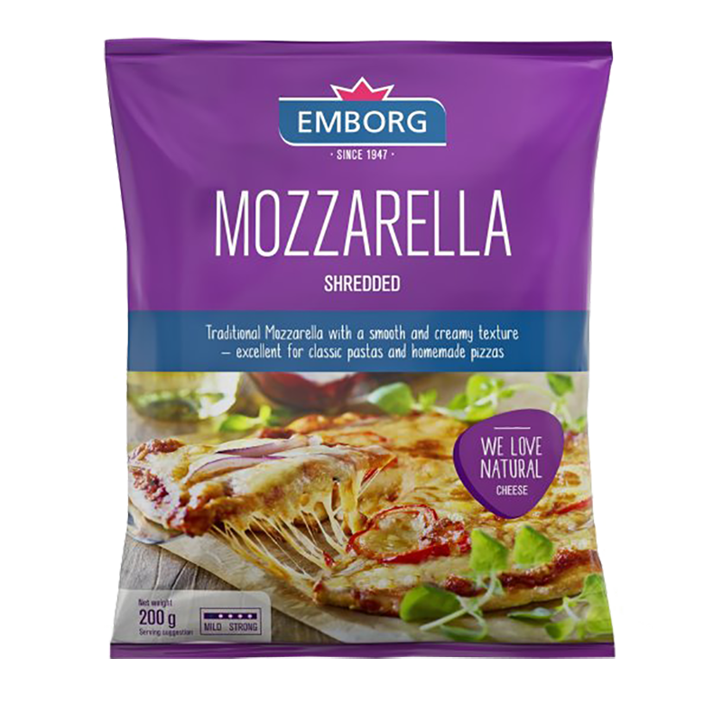

TỔNG HỢP CÁC CÁCH LÀM PIZZA TẠI NHÀ CỰC TÀY, CỰC NGON

Bánh pizza là một trong những món ăn nổi tiếng và được yêu thích nhất trên toàn thế giới, xuất phát từ nước Ý. Với hình dáng tròn đặc trưng, đế bánh mỏng hoặc dày tùy theo phong cách, pizza mang đến sự kết hợp hoàn hảo giữa lớp đế giòn tan, sốt cà chua chua ngọt đậm đà, lớp phô mai mozzarella kéo sợi dài ngậy béo và vô số topping phong phú. Pizza không chỉ là món ăn nhanh tiện lợi mà còn là biểu tượng của sự sum họp, tiệc tùng và những buổi gặp gỡ bạn bè. Và bây giờ Bếp mẹ Lý sẽ hướng dẫn chi tiết cho bạn cách làm banh pizza đơn giản, siêu tày và nhanh chóng mà vẫn ngon như ngoài tiệm.

Bánh pizza là món ăn toàn cầu (Ảnh: Internet)
Hôm nay, chỉ cần một chiếc pizza vừa ra lò, thơm phức, với lớp phô mai kéo sợi dài bất tận, là bạn đã có ngay một bữa ăn ngon miệng, đủ chất và tràn đầy niềm vui. Hãy cùng lưu lại công thức sau đây mà Bếp mẹ Lýsắp cho các bạn xem nhé!
Xem nhanh
Cách làm bánh tại nhà
1. Chuẩn bị nguyên liệu
- 500g bột mì pizza
- 325ml nước ấm
- 7g men nở khô
- 10g muối
- 400g cà chua chín (hoặc cà chua nghiền)
- 200g phô mai mozzarella

Nguyên liệu làm bánh pizza (Ảnh: Internet)
2. Các bước thực hiện
Bước 1: Sơ chế nguyên liệu
Rửa sạch cà chua, bỏ cuống và thái nhỏ. Bóc vỏ tỏi rồi băm nhuyễn. Cắt phô mai mozzarella thành lát mỏng hoặc xé nhỏ. Chuẩn bị lá basil tươi rửa sạch và để ráo.

Sơ chế nguyên liệu (Ảnh: Internet)
Bước 2: Làm đế bánh
Hòa men nở với một ít nước ấm và đường, để khoảng 5-10 phút cho men nổi bọt. Trộn bột mì với muối, đổ hỗn hợp men và nước ấm còn lại vào, thêm dầu ô liu rồi nhào đều tay khoảng 10-15 phút đến khi bột mịn, đàn hồi. Bọc kín bột và ủ ở nơi ấm khoảng 1-2 giờ cho bột nở gấp đôi.

Làm đế bánh (Ảnh: Internet)
Bước 3: Làm sốt cà chua
Xào tỏi băm với một ít dầu ô liu cho thơm, cho cà chua thái nhỏ vào đảo đều. Nêm muối, tiêu và một ít đường, đun nhỏ lửa khoảng 15-20 phút đến khi sốt sệt lại. Có thể xay nhuyễn nếu muốn sốt mịn.

Làm sót cà chua (Ảnh: Internet)
Bước 4: Tạo hình bánh
Lấy bột đã ủ ra, chia thành 2-3 phần tùy kích thước bánh mong muốn. Rắc bột chống dính lên mặt phẳng, cán bột thành hình tròn mỏng đều, dày khoảng 3-5mm, tạo viền ngoài hơi dày hơn một chút.

Phủ nhân lên bánh (Ảnh: Internet)
Bước 5: Nướng bánh
Làm nóng lò nướng trước ở nhiệt độ 220-250°C khoảng 10 phút. Phết sốt cà chua lên đế bánh, xếp lớp phô mai mozzarella, rắc lá basil và một ít dầu ô liu. Nướng bánh khoảng 10-15 phút đến khi đế giòn vàng và phô mai tan chảy kéo sợi.

Nướng bánh (Ảnh: Internet)
3. Yêu cầu thành phầm
Chiếc pizza thành phẩm phải có đế bánh giòn tan ở viền ngoài (gọi là cornicione), phần giữa mềm dai nhẹ, không bị cứng hoặc dai nhách. Sốt cà chua thấm đều, có màu đỏ đẹp mắt, vị chua ngọt cân bằng chứ không quá loãng hoặc quá đặc. Lớp phô mai mozzarella tan chảy đều, kéo thành những sợi dài ngậy béo khi cắt, tạo nên sức hút đặc trưng. Topping phải tươi ngon, không bị cháy khét hay còn sống. Tổng thể bánh phải thơm phức mùi thảo mộc và phô mai, cắt ra từng miếng tam giác đều đặn, nhìn hấp dẫn và ăn ngon miệng ngay khi còn nóng. Một chiếc pizza đạt chuẩn sẽ mang lại cảm giác hài hòa giữa giòn – mềm – ngậy – thơm, khiến người ăn muốn thưởng thức thêm nhiều miếng nữa.

Thành quả (Ảnh: Internet)
4. Phương pháp bảo quản bánh pizza
Để bảo quản pizza sau khi nướng, bạn nên để bánh nguội hoàn toàn trước khi cất. Nếu ăn trong ngày, có thể gói kín bằng màng bọc thực phẩm hoặc để trong hộp kín và bảo quản ở nhiệt độ phòng nơi thoáng mát. Với thời gian dài hơn, hãy cắt pizza thành từng miếng, xếp vào hộp kín hoặc túi zip và để trong tủ lạnh (có thể giữ được 2-3 ngày). Khi muốn ăn lại, hâm nóng trong lò nướng hoặc chảo chống dính ở nhiệt độ vừa phải để đế bánh giòn trở lại, tránh dùng lò vi sóng vì sẽ làm đế bị mềm nhũn. Nếu muốn bảo quản lâu hơn, bạn có thể đông lạnh pizza ở nhiệt độ -18°C, giữ được khoảng 1-2 tháng. Trước khi ăn, rã đông tự nhiên rồi hâm nóng lại để giữ được hương vị và kết cấu tốt nhất. Lưu ý không nên bảo quản pizza quá lâu vì phô mai và topping dễ bị mất độ tươi ngon.
5. Những lưu ý khi làm pizza tại nhà
Khi làm pizza tại nhà, bạn cần chú ý chọn nguyên liệu tươi ngon, đặc biệt là phô mai mozzarella thật và cà chua chín mọng để có hương vị chuẩn. Nhiệt độ nước khi kích hoạt men phải ấm vừa phải (khoảng 35-40°C), nếu quá nóng men sẽ chết, nếu quá lạnh men không hoạt động. Quá trình nhào bột rất quan trọng, phải nhào đủ thời gian để bột phát triển gluten, giúp đế bánh dai và giòn đúng cách. Ủ bột cần đặt ở nơi ấm áp, tránh gió lùa trực tiếp. Khi cán bột, không nên cán quá mỏng ở giữa để tránh cháy khét, và tạo viền ngoài hơi dày để giữ được độ giòn đặc trưng. Lò nướng phải được làm nóng trước kỹ, nhiệt độ cao và thời gian nướng ngắn sẽ giúp bánh chín đều mà không bị khô. Không nên cho quá nhiều sốt hoặc topping vì dễ làm đế bánh bị ướt và không giòn. Cuối cùng, hãy ăn pizza khi còn nóng để tận hưởng độ kéo sợi của phô mai và hương thơm tốt nhất. Nếu mới bắt đầu, bạn có thể thử làm pizza Margherita đơn giản trước để làm quen với công thức cơ bản.

Phô mai hiệu Emborg (Ảnh: Internet)
Điểm: 4 (1 bình chọn)